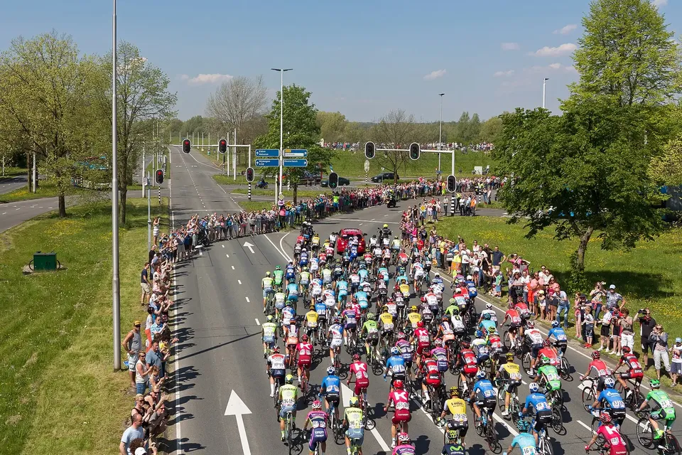

Rollentraining im Winter: So bleibst du auf dem Rad fit, bis die Saison startet
Giro d’Italia 2016, 2. Etappe bei Arnhem. Foto: Michielverbeek, Wikimedia Commons, CC BY-SA 4.0
Draußen ist es nass, kalt und um fünf schon dunkel – das Rad muss trotzdem nicht in den Keller. Mit einer Rolle im Wohnzimmer bleibst du den ganzen Winter in Form und startest im Frühjahr fit in die ersten Ausfahrten und Radevents. Hier erfährst du, welche Rolle zu dir passt, wie du dich einrichtest und wie eine Trainingswoche aussehen kann.
Warum sich die Rolle lohnt
Auf der Rolle zählt jede Minute. Keine Ampeln, kein Rollen bergab, kein Warten an der Kreuzung – du trittst die ganze Zeit. Eine Stunde drinnen fühlt sich deshalb oft so an wie eineinhalb Stunden draußen. Dazu kommt: Du bist unabhängig vom Wetter, brauchst kein Licht und bist nach dem Training direkt unter der Dusche.
Die Rolle ersetzt die Ausfahrt nicht ganz. Aber sie sorgt dafür, dass du nicht bei null anfängst, wenn die Tage wieder länger werden.
Welche Rolle passt zu dir?
| Art | Was du wissen solltest |
|---|---|
| Freie Rolle | Drei Walzen, auf denen das Rad frei steht. Du musst das Gleichgewicht halten – das schult die Technik, braucht aber etwas Übung. |
| Klassischer Rollentrainer | Das Hinterrad wird eingespannt und drückt auf eine Walze. Günstig und einfach, aber lauter, und der Reifen nutzt sich ab. |
| Direktantrieb (Smart Trainer) | Das Hinterrad kommt ab, die Kette läuft direkt auf eine Kassette am Gerät. Leise, gleichmäßig, steuert den Widerstand selbst und verbindet sich mit Trainings-Apps. |
Für den Einstieg reicht ein einfacher Rollentrainer völlig. Wer viele Stunden drinnen verbringen will oder gern mit Apps trainiert, hat mit einem Direktantrieb mehr Freude. Gebrauchte Geräte gibt es oft günstig – im Frühjahr verkaufen viele ihre Rolle wieder.
Dein Platz für den Winter
Ein paar Dinge machen den Unterschied zwischen „Ich quäle mich“ und „Ich steige gerne auf“:
- Ein Ventilator. Der wichtigste Tipp überhaupt. Ohne Fahrtwind wird dir drinnen schnell heiß, und du schwitzt doppelt so viel. Ein Standventilator vor dem Rad macht jede Einheit angenehmer.
- Ein Handtuch über dem Lenker und eine Unterlage unter dem Rad – Schweiß ist auf Dauer nicht gut für Rahmen, Steuersatz und Boden.
- Zwei volle Flaschen. Drinnen trinkst du mehr als draußen.
- Eine Matte dämpft den Lärm, wenn Nachbarn oder Familie mithören.
- Unterhaltung: eine Serie, Musik, ein Podcast oder eine Trainings-App. Bei lockeren Einheiten darf der Kopf ruhig woanders sein.
Lieber kürzer und regelmäßig
Auf der Rolle musst du keine Vier-Stunden-Ausfahrten nachspielen. 45 bis 60 Minuten reichen für die meisten Einheiten, am Wochenende darf es auch mal länger sein. Wichtiger als die Länge ist, dass du dranbleibst: Zwei, drei Einheiten pro Woche über den ganzen Winter bringen mehr als eine Woche voller Begeisterung und dann vier Wochen Pause.
Der Großteil des Trainings ist locker – so, dass du dich nebenbei noch unterhalten könntest. Einmal pro Woche darf es etwas zügiger werden.
So kann eine Woche aussehen
| Tag | Einheit |
|---|---|
| Dienstag | Rolle, 45 Minuten locker – gleichmäßig treten, Trittfrequenz im Blick |
| Donnerstag | Rolle, eine Stunde mit kurzen Tempoabschnitten, z. B. 5 × 4 Minuten zügig mit 3 Minuten locker dazwischen |
| Samstag oder Sonntag | Bei gutem Wetter raus aufs Rad, sonst 75 bis 90 Minuten locker auf der Rolle |
Dazu passt gut ein Lauf oder etwas Krafttraining an einem anderen Tag. Wer Triathlon macht, findet einen Plan mit allen drei Disziplinen in „Schwimmen, Rad, Laufen: dein Triathlon-Winterplan“.
Damit es nicht langweilig wird
- Trittfrequenz spielen: ein paar Minuten schneller kurbeln, dann wieder ruhig. Das macht den Tritt runder.
- Einbeinig treten: kurze Abschnitte mit nur einem Bein (das andere ruht auf einem Hocker) – gut für einen gleichmäßigen Tritt.
- Virtuelle Ausfahrten: Mit Trainings-Apps fährst du durch Landschaften oder mit anderen zusammen. Das lenkt ab und motiviert.
- Gemeinsam fahren: Viele Radgruppen fahren im Winter weiter oder treffen sich zu gemeinsamen Ausfahrten am Wochenende.
Raus, wann immer es geht
Ein trockener, sonniger Wintertag ist ein Geschenk. Dann lohnt sich eine Ausfahrt draußen – mit der richtigen Kleidung, Licht und etwas Geduld auf nassen Straßen. Was du im Winter auf dem Rad anziehst, steht in „Winterkleidung für Läufer und Radfahrer“. Und wer lieber im Wald unterwegs ist: Mit dem Gravelbike oder Mountainbike sind Waldwege im Winter oft schöner als die Straße.
Ein Ziel für das Frühjahr
Mit einem Termin im Kalender steigst du lieber auf die Rolle. Such dir schon jetzt eine RTF, einen Radmarathon oder ein Jedermannrennen für das Frühjahr aus. Welches Format zu dir passt, erklärt „RTF, Radmarathon oder Gran Fondo“.
Fazit
Ein Ventilator, zwei Flaschen und zwei bis drei kurze Einheiten pro Woche – mehr braucht es nicht, um mit der Rolle gut durch den Winter zu kommen. Fahr meistens locker, an schönen Tagen draußen, und nimm dir ein Ziel für das Frühjahr vor. Dann fühlt sich die erste lange Ausfahrt im März richtig gut an.
Dein Radevent für 2027
RTFs, Radmarathons und Rennen für dein Ziel im Frühjahr – und Radgruppen, die auch im Winter gemeinsam fahren.
Alle Tipps in diesem Beitrag sind Erfahrungswerte.